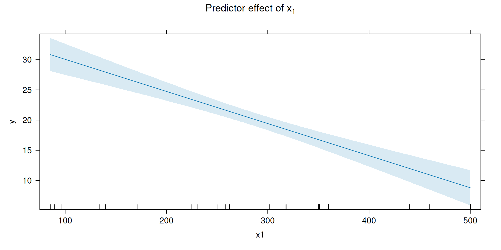
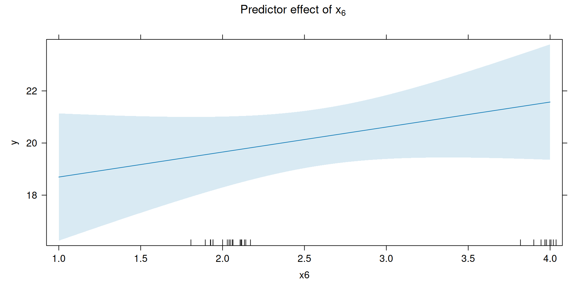

The coefficient of engine displacement is \(b_1=-0.05315\). Holding the number of carburetor barrels \(x_6\) fixed, an increase of one cubic inch in engine displacement is associated with a decrease of about \(0.053\) mpg in predicted gasoline mileage.
The coefficient of the number of carburetor barrels is \(b_6=0.9592\). Holding engine displacement \(x_1\) fixed, one additional carburetor barrel is associated with an increase of about \(0.959\) mpg in predicted gasoline mileage.
The word holding is important: these are partial regression coefficients, so each coefficient describes the association with mileage after accounting for the other predictor in the model.
2. Overall significance of regression
We test
\[
H_0:\beta_1=\beta_6=0
\]
against
\[
H_1:\beta_j\neq 0 \text{ for at least one }j.
\]
As discussed in class, this is an overall \(F\) test comparing the full model with the intercept-only null model.
summ_fit
Call:
lm(formula = y ~ x1 + x6, data = mpg_data)
Residuals:
Min 1Q Median 3Q Max
-7.0623 -1.6687 -0.3628 1.6221 6.2305
Coefficients:
Estimate Std. Error t value Pr(>|t|)
(Intercept) 32.884551 1.535408 21.417 < 2e-16 ***
x1 -0.053148 0.006137 -8.660 1.55e-09 ***
x6 0.959223 0.670277 1.431 0.163
---
Signif. codes: 0 '***' 0.001 '**' 0.01 '*' 0.05 '.' 0.1 ' ' 1
Residual standard error: 3.013 on 29 degrees of freedom
Multiple R-squared: 0.7873, Adjusted R-squared: 0.7726
F-statistic: 53.67 on 2 and 29 DF, p-value: 1.79e-10
The reported overall test gives approximately
\[
F=53.6688
\]
with \(2\) and \(29\) degrees of freedom, and
\[
p\approx1.79\times10^{-10}.
\]
The same test can be viewed directly as a comparison of nested models:
null_model <-lm(y ~1, data = mpg_data)anova(null_model, fit)
Analysis of Variance Table
Model 1: y ~ 1
Model 2: y ~ x1 + x6
Res.Df RSS Df Sum of Sq F Pr(>F)
1 31 1237.54
2 29 263.23 2 974.31 53.669 1.79e-10 ***
---
Signif. codes: 0 '***' 0.001 '**' 0.01 '*' 0.05 '.' 0.1 ' ' 1
Under the null model, every fitted value is \(\bar y\), so its residual sum of squares is \(SS_T\). The reduction in residual sum of squares from the null model to the full model is therefore \(SS_R\).
The overall ANOVA quantities are approximately
Source
df
SS
MS
\(F\)
Regression
2
974.3095
487.1548
53.6688
Residual
29
263.2345
9.0771
Total
31
1237.5441
Since the \(p\)-value is much smaller than \(0.05\), we reject \(H_0\). There is strong evidence that at least one of engine displacement and number of carburetor barrels contributes linearly to explaining gasoline mileage.
Adding \(x_6\) increases \(R^2\) from about \(0.772\) to \(0.787\). Because \(R^2\) cannot decrease when a predictor is added, the adjusted \(R^2\) is more useful for judging whether the added variable provides enough improvement to offset the additional model complexity.
Here, adjusted \(R^2\) also increases, but only modestly, from about \(0.765\) to \(0.773\).
4. Confidence interval for \(\beta_1\)
A 95% confidence interval for the regression coefficients can be obtained with
For \(\beta_1\), the 95% confidence interval is approximately
\[
\boxed{(-0.06570,\,-0.04060)}.
\]
Thus, after accounting for the number of carburetor barrels, we estimate that increasing engine displacement by one cubic inch is associated with a decrease of between about \(0.041\) and \(0.066\) mpg in the mean gasoline mileage.
Since zero is not contained in the interval, the data provide evidence that \(\beta_1\neq0\) at the 5% significance level.
Since \(p>0.05\), we fail to reject \(H_0\). After accounting for engine displacement, there is not sufficient evidence at the 5% significance level that the number of carburetor barrels has a nonzero linear effect on mean gasoline mileage.
The point estimate of the mean gasoline mileage is approximately
\[
\hat y=20.1874\text{ mpg}.
\]
The 95% confidence interval for the mean gasoline mileage is approximately
\[
\boxed{(18.8722,\ 21.5026)\text{ mpg}}.
\]
We are 95% confident that the mean gasoline mileage for automobiles with engine displacement 275 in\(^3\) and two carburetor barrels lies within this interval, under the fitted model.
This interval predicts the gasoline mileage of a single new automobile with engine displacement 275 in\(^3\) and two carburetor barrels.
The prediction interval is wider than the confidence interval in Question 6 because it includes both uncertainty in estimating the mean response and the natural car-to-car variability around that mean.
8. Compare uncertainty with the simple linear regression model
For the simple linear regression model from Homework 2,
At this particular predictor setting, adding \(x_6\) does not reduce uncertainty in estimating the mean response: the confidence interval becomes wider.
The prediction interval becomes only slightly shorter, from about \(12.715\) mpg to \(12.601\) mpg. Thus, for this particular prediction, adding \(x_6\) provides only a very small reduction in prediction uncertainty. This is consistent with the marginal test in Question 5, where \(x_6\) was not statistically significant after accounting for \(x_1\).
9. Verify \(SS_{\mathrm{res}}\) using matrix operations
Construct the response vector and design matrix:
y <- mpg_data$yX <-cbind(1, mpg_data$x1, mpg_data$x6)colnames(X) <-c("Intercept", "x1", "x6")X[1:5, ]
As discussed in class, a predictor effect plot displays the fitted relationship between the response and one predictor while accounting for the other predictors in the model.
We use the effects package in the same way as in the lecture notes.
par(mfrow =c(1, 2))plot( effects::predictorEffects(predictor ="x1",mod = fit ),main =expression("Predictor effect of "* x[1]))

plot( effects::predictorEffects(predictor ="x6",mod = fit ),main =expression("Predictor effect of "* x[6]))

par(mfrow =c(1, 1))
For \(x_1\), the fitted effect slopes downward. Holding the other predictor fixed, larger engine displacement is associated with lower mean gasoline mileage. This agrees with the estimated coefficient \(b_1=-0.05315\).
For \(x_6\), the fitted effect slopes upward because \(b_6=0.9592\). However, the confidence band is relatively wide, consistent with the marginal test in Question 5, where there was not sufficient evidence at the 5% level that \(\beta_6\) differs from zero.
The important interpretation is that each plot shows the effect of one predictor given that the other predictor is already in the model.
11. Joint confidence region for \((\beta_1,\beta_6)\)
The individual intervals from confint() are marginal confidence intervals. They consider one coefficient at a time and do not account for the correlation between the coefficient estimates.
First examine the estimated covariance and correlation matrices:
The ellipse is the 95% joint confidence region for the pair \((\beta_1,\beta_6)\). It reflects both the uncertainty in the two coefficient estimates and their correlation.
The dashed vertical and horizontal lines show the separate 95% marginal confidence intervals. The joint region is not simply the rectangle formed by those marginal intervals because \(b_1\) and \(b_6\) are correlated.
The point \((0,0)\) is outside the joint confidence region. This agrees with the overall \(F\)-test in Question 2: we reject
\[
H_0:\beta_1=\beta_6=0.
\]
This does not mean that both coefficients are individually significant. In Question 5, \(\beta_6=0\) was still plausible in the marginal test, whereas \(\beta_1=0\) was not.
Mathematical Derivation and Reasoning
12. Relationship between \(r^2\) and \(R^2\)
For simple linear regression with an intercept, define